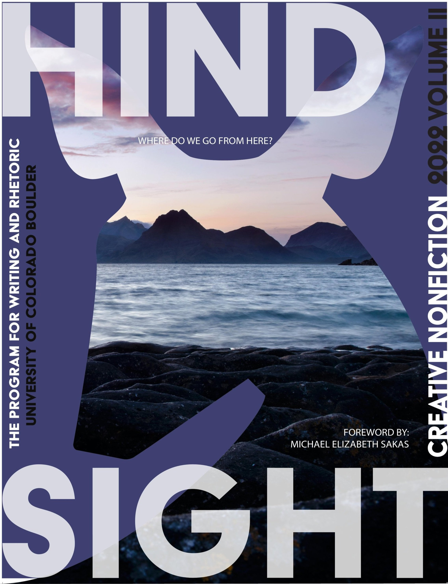

Mission Statement
In an effort to bring awareness to the dramatic effects of climate change, we introduced a new journal, CHANGING SKIES. Along with student writing and art from CU Boulder, we take submissions from beyond our literary and artistic postage stamp. Changing Skies features creative nonfiction as memoir and other forms, but also includes interviews with and profiles of experts on, and those suffering from, the effects of this ongoing threat to the earth and all its inhabitants. Together we mourn what’s irrevocably lost, but we also look for the positive changes humans can learn to make more often.
News

Hindsight Journal
Issue #2
Read the latest issue of Hindsight, our sister journal by clicking here.
Looking Forward to AWP
March 8-11, 2023, Changing Skies will be attending the AWP Conference in Seattle, Washington.
Art Contest Closed
Submissions for the current art contest have been closed. Come back here to see when we release the list of winners.
Piece of the Week
Art/Writing selected from our archives, updated regularly.
Pufsize
by Elijah Pettet
Links
Our Socials
Our Friends
Our Podcasts
The Snapped Branch (2022-Present)
Past Issues
Hindsight
Journal 2020
Our Staff
Julia Cleyman
Julia Cleyman (she/her) is the Marketing Director for Hindsight. She is in the Leeds Business Program with an emphasis on Marketing and Data Analytics. This is her third semester in the journal but she is excited to continue her work in marketing and bringing Hindsight national. With the help of everyone on staff, she hopes to make the journal more memorable than ever.
Shadia Nagati
Shadia Nagati joined Hindsight's staff in the spring of 2022. She’s a senior in the Environmental Studies program and serves as Managing Editor for Changing Skies, our new journal that features pieces on climate change. If she's not responding to emails, she's probably looking for bears.
Ian Hall
Ian Hall (he/him) is a Junior studying Anthropology and Media Production. This is his third semester on the journal staff. He started in the Spring of 2022 as the Assistant Digital Production Manager, took over as Editor in Chief in Fall 2022, and is now the Assistant Editor in Chief.
Mark Whooley
Mark Whooley is a second semester junior studying Advertising and Information Science at CU. This is his second semester working for the journal. Mark is an intern working on journal design, A/V, promotion and will assist other departments throughout the semester.
Finn Cruit
Finn Cruit (he/him) is the current Music/Audio Editor at Hindsight. He is a Sophomore Music Performance Major, studying viola. He hopes to bring some music-oriented insights and contributions to Hindsight, being the only music major on staff.

Graham Mauer
Graham Mauer (he/him) is a Junior studying Math and Astrophysics. This is his fourth semester on Hindsight. Aside from working as an editor, he spends his free time bothering his roommate’s cat and doing chemistry experiments.
Chloe Arroyo
Chloe Arroyo (she/her) is a sophomore pursuing a double major in English and Political Science on the Pre-law track. This is her second semester working with Hindsight and Changing Skies as a part of the editorial staff.
Andy Merrill
Andy is a junior studying communications with a minor in Spanish at CU. This is his second semester working with the journal as the assistant marketing director. He is from Park City, Utah but has loved his time living in Colorado.
Emily Calvert
Emily Calvert is the Assistant Managing Editor for Hindsight and Changing Skies. She is a Sophomore double majored in English Literature and Secondary Education. This is her first semester with Hindsight and Changing Skies, but she is excited to learn more about both journals and the process of bringing them to life. She’s looking forward to working with and learning from everyone on the journal!
Eid
Eid is a blind editor who joined Hindsight in the fall of 2021. He’s a junior majoring in English (Creative Writing). He mostly writes fiction, sometimes nonfiction, and is slowly getting into the world of poetry. He enjoys cooking and is interested in philosophy, psychology, mythology, and he nourishes his creativity from movies, courses on MasterClass, books, and music. He’s so excited to discover what the future holds!
Estrella Vigil
Estrella Vigil is a sophomore at CU Boulder studying English Literature and minoring in business. She enjoys reading and writing poetry along with various arts and crafts such as crochet and painting–another hobby of hers includes collecting stickers and small objects. Estrella is passionate about reading and writing, and hopes to make a career out of this passion with the help of her education.
Skyler Sysouthavongsa
While he is a barista on the weekends, Skyler is the InDesign Manager for Hindsight. He is a Junior pursuing degrees in both Anthropology and Creative Writing. While he was younger, Skyler performed Ballet in front of an audience. However, now he is spending his time discovering new books. His favorite genres include autobiographies, non-fiction, psychology, and romance.
Campbell Watson
Campbell Watson is currently serving as the Managing Editor of Hindsight. This is his first semester with the journal. He is a senior at CU Boulder majoring in Ecology & Evolutionary Biology, and minoring in Geography. Despite a science-focused background, he is an enthusiastic writer, a thorough editor, and enjoys helping our writers publish their best possible work.
Liam Downey
Liam Downey (he/him) is a blind reviewer for Hindsight. He is a sophomore in the College of Arts & Sciences as a Psychology major at CU Boulder. This is his first semester in the journal but he is excited to continue his work in the editorial department in the future. He hopes to help make the journal the best it could possibly be.
Made with ❤️ in Boulder, CO